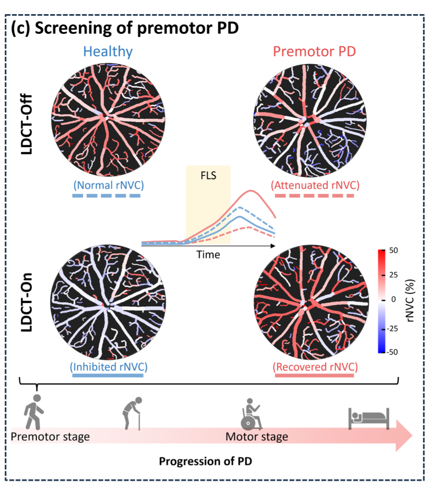
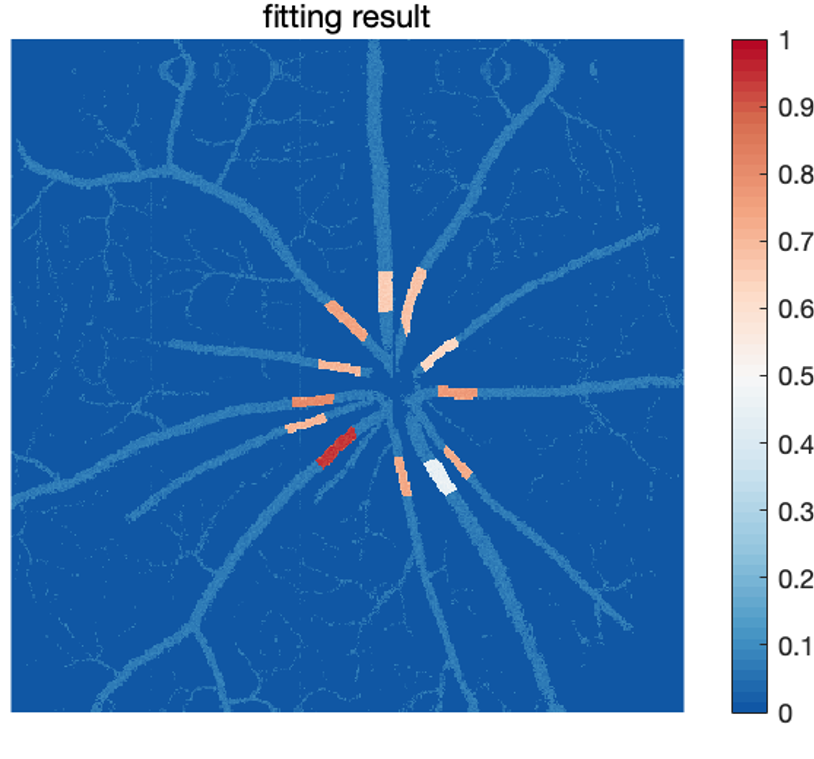
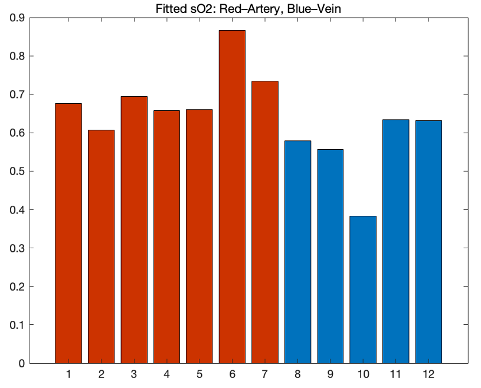
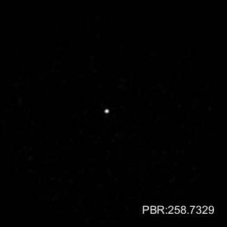
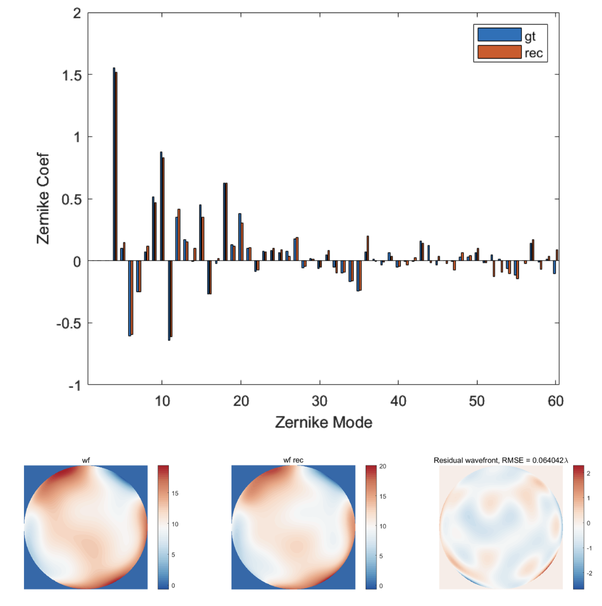
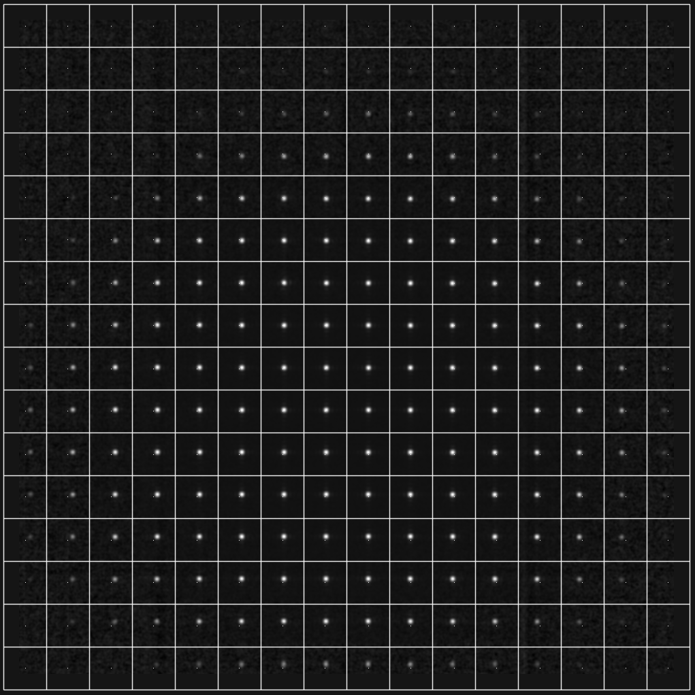
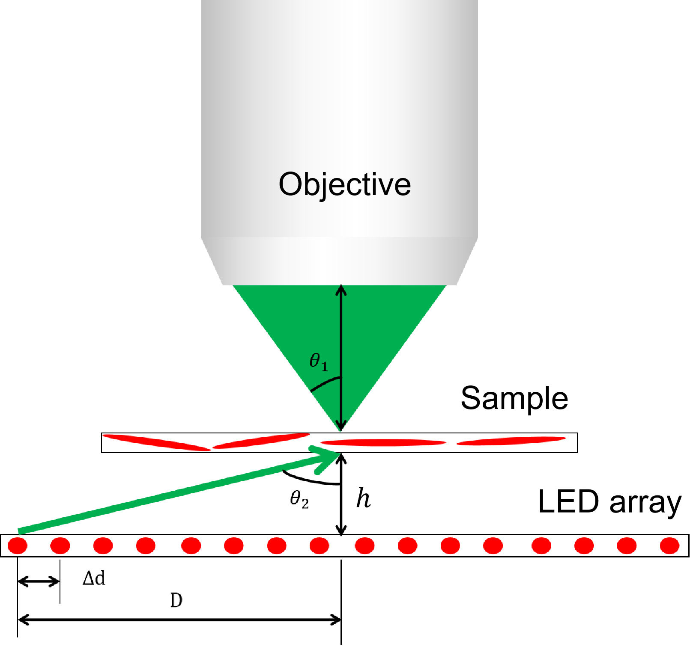
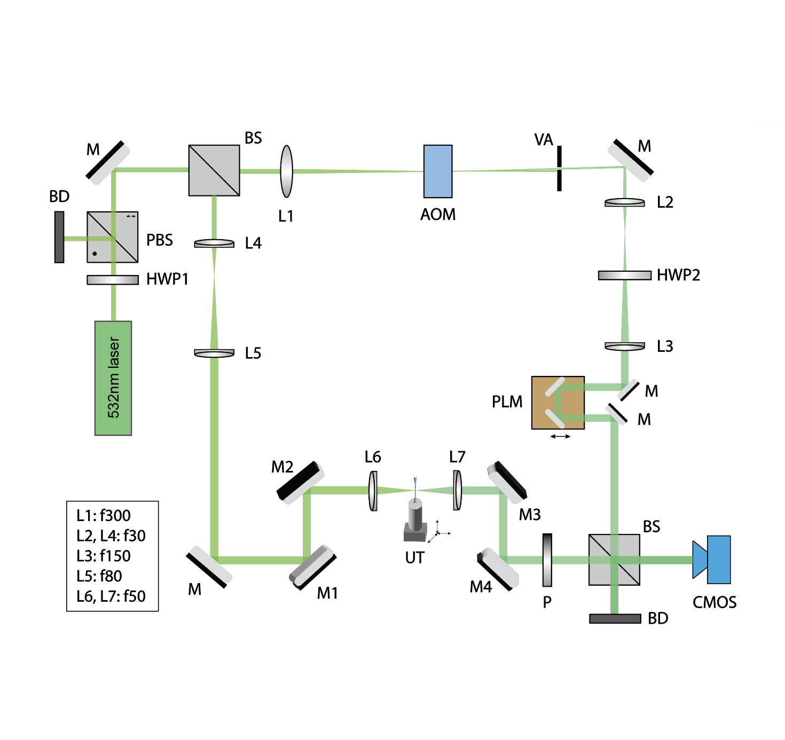
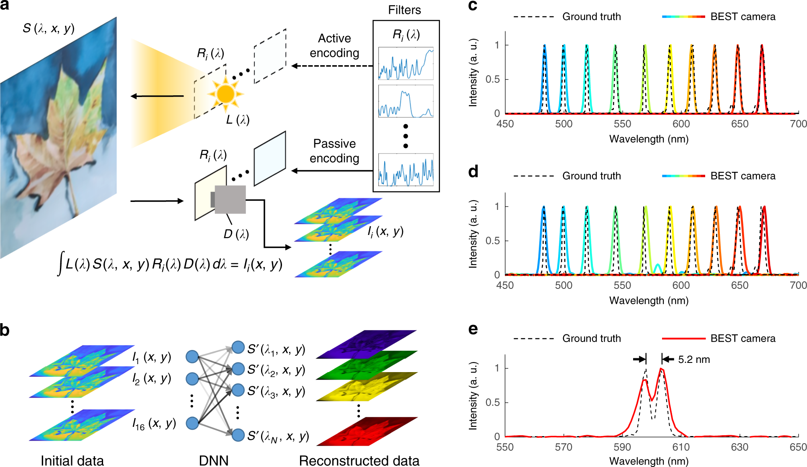
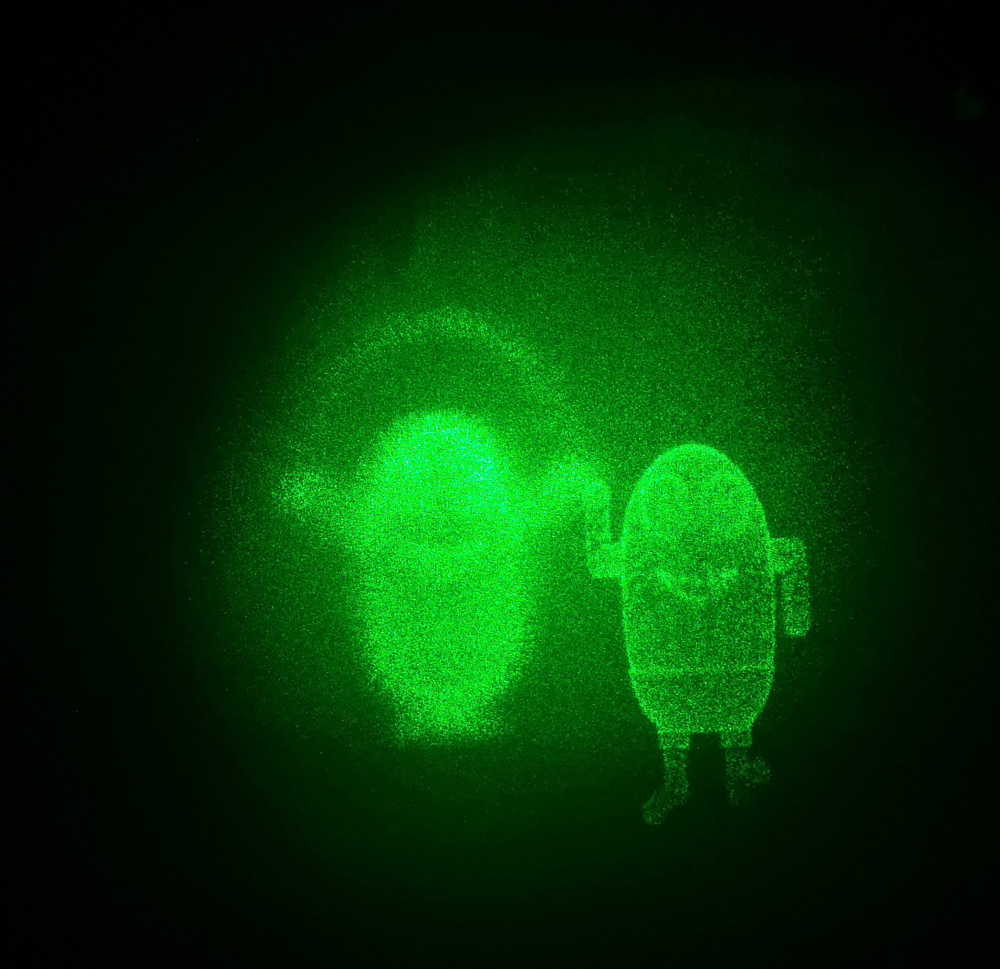

|
Longqian HUANG (黄隆钤) Hello👋! My name is Longqian Huang, an enthusiast in advancing cutting-edge optical technologies for brain science. Previously, I got my bachelor's degree in Optical Engineering from Zhejiang University in 2022, with an honors degree from Chu Kochen Honors College. During my undergraduate, I was fortunate to work closely with Prof. Xiang Hao and Prof. Xu Liu on several research projects regarding computational imaging. I received 'Top 10 Academic Achievements in Zhejiang University Students' in 2022. Upon completing my undergraduate studies, I embarked on a 1-year Ph.D. journey in Neurobiology with Prof. Ke Si and Prof. Wei Gong, at the College of Brain Science and Brain Medicine, Zhejiang University. During this time, I immersed myself in fundamental neuroscience concepts and engaged in experimental work focused on wavefront sensing and shaping for optogenetics. In September 2023, I made the decision to withdraw from this program, motivated by a desire to explore new Ph.D. opportunities in physics and optics. I am now a EE Ph.D. student at COILab @ Caltech, under the supervision of Prof. Lihong V. Wang.
CV / Google Scholar / Github / Blog |

|
ResearchMy research works and interests spans digital optical phase conjugation(DOPC), computational imaging (spectral imaging, computational holography), optical coherence tomography (OCT), multi-mode fiber imaging, and neuroscience. My goal is to fuse cutting-edge deep learning with advanced optical microscopy systems to create a powerful platform for neuroscience & brain research. I'm fascinated by fundamental optical technologies and am eager to explore new research areas, such as nonlinear and quantum optics (which offers exciting opportunities for novel microscopy) metalens (which is a great source of creativity for high-performance wavefront sensing), and ultrafast lasers (which are fundamental to multiphoton microscopy). |
|

|
Transocular detection of premotor Parkinson's disease
via retinal neurovascular coupling through functional OCT angiography
Kaiyuan Liu, Ruixue Wang, Longqian Huang, Huiying Zhang, Mengqin Gao,
Bin Sun, Yizhou Tan, Juan Ye, Zhihua Ding, Ying Gu, Shaomin Zhang, Peng Li
Detecting Parkinson's disease (PD) at early before motion deficits is essential for its treatment. We try to identify the brain's dopaminergic neuron degeneration, which is closely related to pre-motor PD. We proposed to monitor it indirectly with the retina's neurovascular coupling (rNVC) level through functional OCT angiography (fOCTA). Through extensive experiments, we showed that the pre-motor PD mice exhibit a significant decrease in both the amplitude and phase of the rNVC index, readily used to classify pre-motor PD from the healthy controls. We further demonstrate that administering levodopa, a precursor of dopamine, in the Levodopa Challenge Test (LDCT) reverse the rNVC response and this reverse can act as another feature in pre-motor PD classification. Together, we achieved an accuracy of ~100% in the detection of pre-motor PD mice. |
|


|
Near-infrared OCT Oximetry
[in progress] I delved into processing near-infrared OCT data in mouse retina, in order to perform computational oximetry in retinal arteries/veins. A core difficulty in this research is the extinction coefficients of hemoglobin and oxy-hemoglobin in near-infrared spectral band are not readily distinguishable. We managed to utilize advanced OCT processing algorithms to fit physical models and eventually estimate the oxygen level within mouse retinal vessels. |
|

|
Multimode Fiber Wavefront Shaping
I re-produced the self-reference interferometry method for transmission matrix measurement on a multimode fiber. With the acquired transmission matrix, we could perform focusing/wavefront shaping through the multimode fiber. The achieved focus has a high peak-to-background ratio that is suitable for focus scan imaging. |
|


|
Learning-based Shack-Hartmann Wavefront Sensor
[in progress] I built a toy optical system with a spatial light modulator (SLM) and microlens array to test the traditional and deep learning-based direct wavefront sensing algorithm for the Shack-Hartmann wavefront sensor (SHWS). It is a consecutive work of Dr. Lejia Hu. The SLM was well-calibrated, and the SHWS successfully reconstructed the simulated aberration and 200-um brain slice-induced aberration. To acquire the dataset efficiently, I also developed a C++ software that could control the Photonfocus CMOS to communicate with MATLAB via TCP/IP. The pre-trained neural network was also embedded into the software for easy use. |
|  |
Illumination strategies for space-bandwidth-time product improvement in Fourier ptychography
Haibo Xu, Cheng Li, Mingzhe Wei, Ziwen Zhou, Longqian Huang (Leading Author)
I led a team of 5 students to conduct a review on Fourier ptychography (FP). We derived the space-bandwidth-time product (SBP-T) as a metric for the FP system. Based on the analysis of SBP-T, we anticipated and categorized several illumination strategies that can improve FP performance: (a) increase illumincation NA via condenser or reflection configuration, (b) increase objective NA via diffuser illumination for spatial frequency expansion, (c) decreasing acquisition time via sparse or multiplexed illumination. Although the manuscript is still rough, I believe this work is insightful for scrutinizing an optical microscope. |
|

|
Ultrasound-encoded Heterodyne Wavefront Sensing
I re-produced first-part of the work ultrasound-guided digital optical phase conjugation (DOPC) , building a Mazh-Zehnder interferometor for wavefront measurement. The target wavefront is at the focus of an ultrasound transducer, where light interacts with the ultrasound and is frequency-shifted. The reference arm is also frequency-shifted by an acousto-optic modulator. As a result, the constrained wavefront in the light-ultrasound interaction volume is detected at a differential frequency. I also derived a theoretical framework with simulations for improving the light-ultrasound interaction efficiency. |

|
Spectral Imaging with Deep Learning
Longqian Huang, Ruichen Luo, Xu Liu, Xiang Hao.
[PDF] [Link] [Behind the Paper] I conducted a comprehensive survey on deep learning-enabled spectral imaging methods. I grouped learning-based computational spectral imaging methods based on different encoding strategies on the properties of light. I also arranged the common dataset that may contribute to the field. |
|  |
Deeply learned broadband encoding stochastic hyperspectral imaging
Wenyi Zhang*, Hongya Song*, Xin He, Longqian Huang, Xiyue Zhang, Junyan Zheng, Weidong Shen, Xiang Hao & Xu Liu.
[PDF] [Link] [Behind the Paper] We used PCSED to jointly design broadband wavelength encoding filters and the corresponding decoders for spectral reconstruction. After fabrication, we made a computational spectral imaging camera named "BEST" that can perform spectral imaging at high resolution (480x640x301, spectrum channel 400nm-700nm, 1nm step) and high speed (0.48s). |
|

|
Computational Holography
We used the Gerchburg-Saxton (GS) algorithm to back-propagate the Fresnel diffraction of light and determined the phase to be added on a spatial light modulator (SLM). By slicing the 3D object and using the GS progressively, we obtained the phase stack of the object. We realized 3D, dynamic and colorful holography ultimately. |
Education |
|
California Institute of Technology
2024 - , Division of Engineering and Applied Science, California, United States Ph.D. in Electrical Engineering Advisor: Prof. Lihong V. Wang |
|
 |
Zhejiang University
2022 - 2024, School of Brain Science and Brain Medicine, Hangzhou, China Ph.D. in Neurobiology [withdrawn] Advisor: Prof. Ke Si and Prof. Wei Gong |
|
Zhejiang University
2018 - 2022, Chu Kochen Honors College, Hangzhou, China B.Eng.(Honors) in Optical Engineering Cumulative GPA: 89.61/100, 3.94/4.0 Major GPA: 89.50/100, 3.96/4.0 Advisor: Prof. Xiang Hao and Prof. Xu Liu |
|
Many thanks to the source code. |